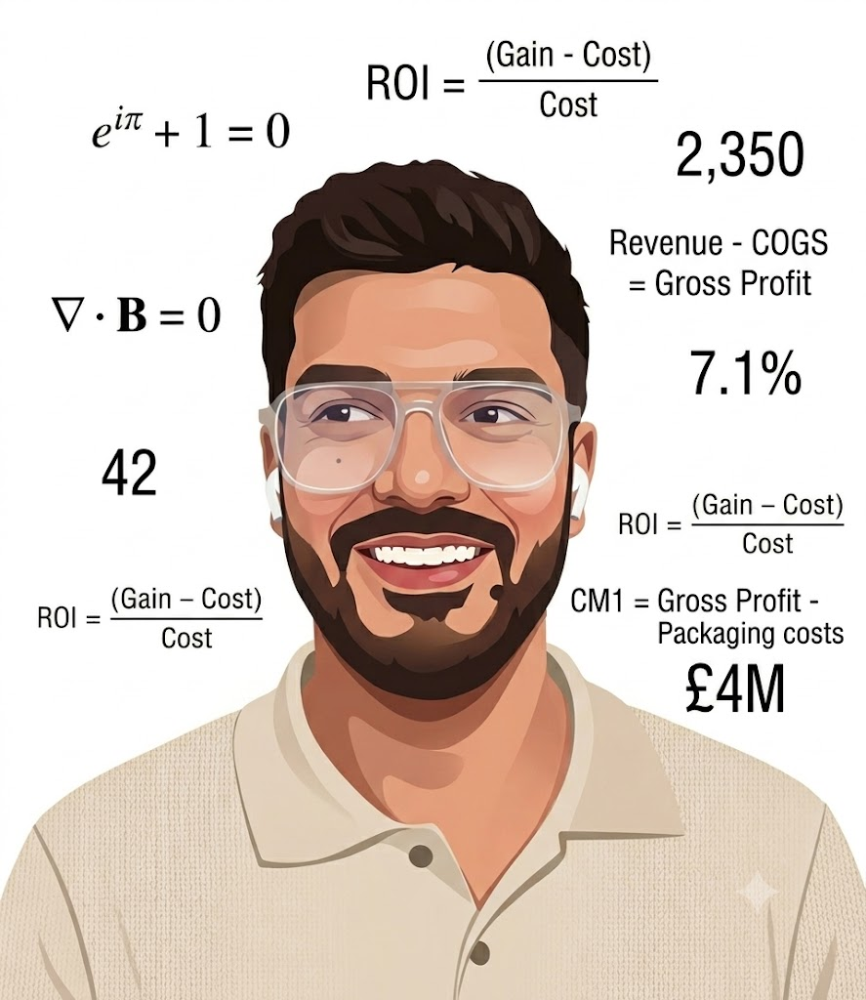
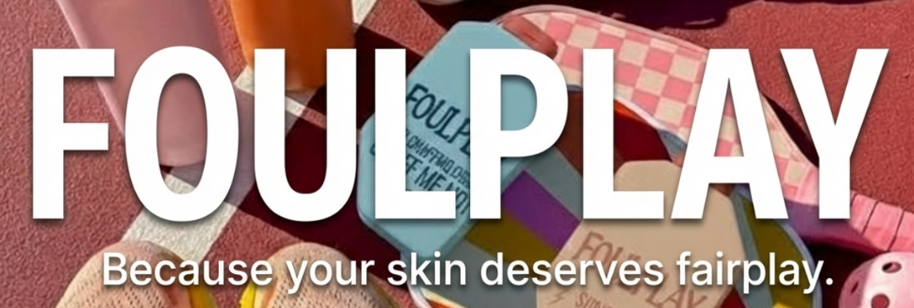
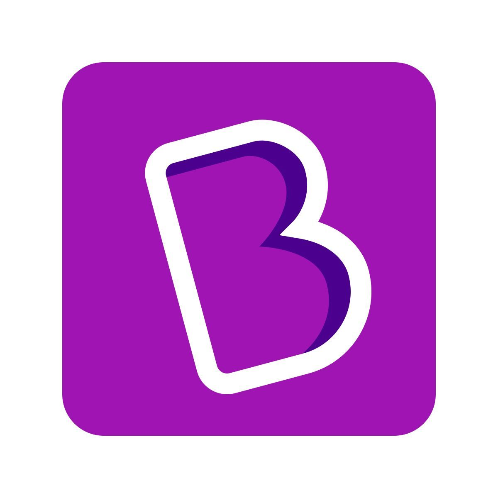
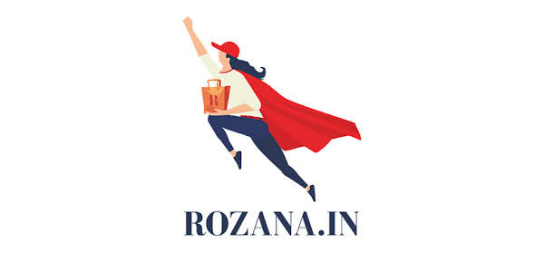
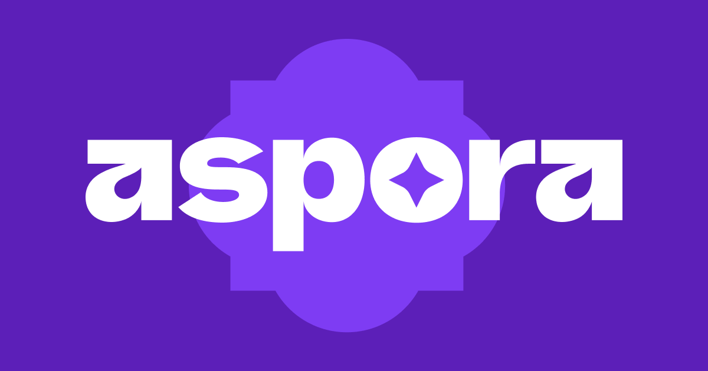

Hi! 👋 I'm Harsh

Who am I? 🤔
Half banker, half founder, fully caffeinated.
I've spent years sitting across the table from founders, helping startups raise cash from VCs and navigate M&As, structuring deals and building the financial models that made investors say yes. Outside the boardroom, I built my own D2C fragrance brand, Scentense, from scratch - selling at offline stalls, tracking every rupee of unit economics, and learning what it actually costs to build something real. Along the way I collected a CFA Level 2, an ACCA, and an MBA from Mesa - not because I had to, but because I genuinely like knowing how the numbers work.
Now I'm hunting for a Founder's Office or Chief of Staff seat at an early-stage startup, preferably one chasing down the next big problem worth solving.
Some of the projects that I've done...
Cookd - Quick Commerce Growth
Cookd had strong brand recall but low add-to-cart rates on Q-commerce platforms. Converting content audiences into buyers required rethinking the entire purchase funnel.
Redesigned the Q-commerce funnel with sharper platform placement, cross-sell bundling, and retargeting sequences tied to recipe content. Selected as top candidate pitching directly to the Cookd investor panel.

FOULPLAY - New Brand Launch for Mamaearth
Mamaearth needed a new sub-brand for a younger demographic without cannibalising its existing identity - in a category crowded with established FMCG players.
Built a full GTM and brand positioning strategy: audience segmentation, channel mix, creative direction, and a phased launch roadmap with milestone KPIs to measure early traction.

BYJU's - Restructuring & Revival Strategy
BYJU's faced mounting debt, regulatory scrutiny, and collapsing investor confidence. The business needed a credible turnaround plan, not just cost cuts.
Designed a phased revival playbook diagnosing root causes across unit economics, cash flow, and aggressive sales practices - with a staged operational reset to restore trust and rebuild a path to sustainable growth.
Wellopia - Ad Campaign Creation
Wellopia needed to build brand awareness among urban health-conscious users with a lean budget and no established creative identity to build from.
Developed a full advertising campaign: creative brief, messaging framework, audience targeting, and channel strategy designed to drive both awareness and conversions without splitting focus or overspending.

Rozana - Rural E-Commerce GTM
Rozana's e-commerce vertical had low adoption and poor retention in rural markets where digital trust is fragile and standard growth playbooks simply don't work.
Built a data-driven GTM from 40+ stakeholder interviews. Mapped key user personas, designed a trust-led community growth loop through familiar local channels, and modelled a loyalty programme projecting a 3-4% revenue uplift.

Aspora - GTM Strategy
Aspora was pre-launch with a strong product hypothesis but no validated go-to-market path - and needed to find signal before committing capital to any one channel.
Built an end-to-end GTM covering market entry sequencing, customer personas, channel selection, pricing logic, and early growth levers - structured to reach PMF signal as fast and cheaply as possible.
Core Skills
A blend of finance rigour and hands-on execution across growth, strategy, and analytics.
Growth & GTM Expansion
Designing go-to-market strategies, identifying distribution channels, and driving customer acquisition from 0 to 1.
Stakeholder Management
Working directly with founders, investors, and senior executives to align priorities and drive outcomes across mandates.
Data & Analytics
Building dashboards, MIS systems, and data-driven frameworks to surface insights and reduce manual reporting effort.
Financial Modelling
End-to-end financial models for fundraising, M&A, and unit economics - including CFA L1 & L2 (95th %ile) credentials.
Investment Banking & M&A
3 years at a boutique IB leading $100M+ deals, due diligence, acquisition sourcing, and cross-border transactions.
AI Workflow Automation
Building practical AI agents for business processes - from social media audits to invoice processing and financial analysis.
Work Experience
From investment banking to startup execution - a generalist path built with intent.
- Founded Scentense, a D2C perfume brand - scaled to ₹3L+ revenue in 8 weeks, 8+ SKUs, 50% gross margins.
- Won Student of the Term (Term 1) & Fan Favourite Award for Scentense; Top 10%ile in Terms 1 & 3.
- Selected as top candidate by Urban Company executives for designing a partner retention strategy.
- Top 10 teams pitching an AI quick-commerce startup to Sajith Pai, Partner at Blume Ventures.
- Contributed to MESA Startup Casebook 2026; 2nd Place at Finance Case Competition, Christ University.
- Led a $100M cross-border M&A deal to final stages; led due diligence on a Canadian mining target.
- Managed a $15M hospital fundraising mandate end-to-end, with acquisition scenario showing 2× revenue potential.
- Built automated MIS dashboard for a 25+ asset hospitality startup, reducing manual reporting by ~70%.
- Owned acquisition sourcing for a leading insurance aggregator's AI insurtech entry; advanced 1 target to final-stage discussions.
- Promoted to Senior Analyst within 2 years; led expansion into Portfolio Management Services and NBFC partnerships.
- Designed a data-driven GTM strategy from 40+ stakeholder interviews to improve adoption and retention.
- Developed a trust-led, community-driven growth plan using engagement loops and trusted channels.
- Proposed a customer loyalty program estimating 3–4% revenue uplift.
Education & Certifications
Finance-first academic foundation, topped with startup leadership experience.
PGP in Startup Leadership
MESA School of Business, Bengaluru · GMAT 95th %ile
CFA Level 1 & Level 2
CFA Institute, USA · L1: 85th %ile · L2: 95th %ile
ACCA
Association of Certified Chartered Accountants, UK
B.Com (Hons) - International Finance
GCEC, Jaipur · Top 10%ile
Let's Connect
Open to generalist roles in GTM, Strategy, Finance & Growth. Reach out - I'd love to chat.